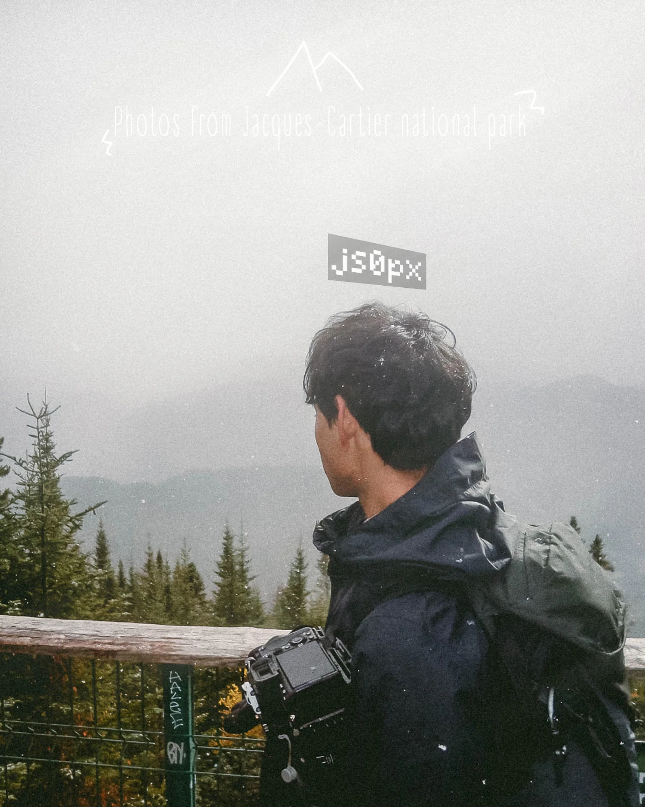

JEANLY SO / JS0PX
Photography started with curiosity.
I'm an Ottawa-based photographer who enjoys capturing cars, landscapes and moments that feel like they belong in a film. What started from picking up a camera at a car event became something I kept wanting to do more of.
I like trying new angles, finding locations and working with people who have a story or something they want to create.
- Automotive and private client photography
- Cars & Coffee and local event projects
- Landscapes, travel and architecture
- Photography, video and visual editing
SELECTED WORK
Different scenes.
One perspective.
Cars, locations and the little details in between.


CONTACT / BOOKINGS
Let's create
something together.
For photography, video projects, events or private shoots, feel free to reach out through my photography Instagram.
Message @js0px